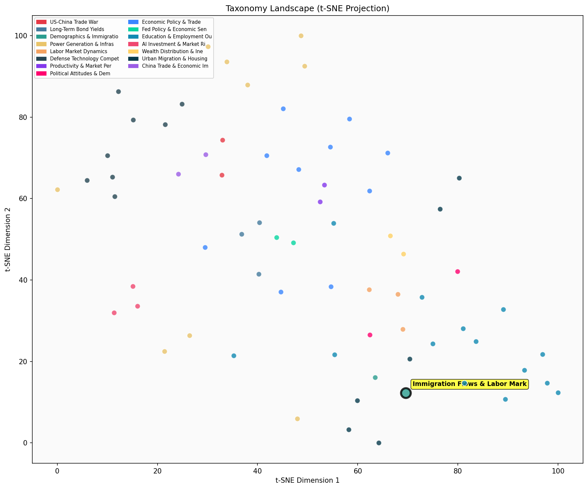

Description
This subcluster focuses on quantitative analysis of immigration patterns and their direct economic consequences, particularly labor market effects. Articles examine specific immigration programs like H-1B visas, border enforcement data, asylum policies, and workforce demographics. Common sources include government statistics (Border Patrol encounters, CPS data), policy institute analyses (AEI, Pew Research), and economic impact studies measuring productivity gains, fiscal costs, and skill-level distributions. The content emphasizes data-driven assessments of immigration's net economic effects across education levels. Unlike its sibling subcluster on fertility and family structures, this group concentrates on cross-border migration flows and immediate labor market integration rather than long-term demographic transitions within populations.
Similarity to All 70 Subclusters
Each cell represents a subcluster. Color intensity shows similarity (blue=low, red=high). Black line marks current subcluster position.
Relationship to Primary Clusters
Average similarity to each of the 15 primary clusters. Larger area = stronger relationship to that cluster.
Taxonomy Landscape
All 70 subclusters positioned by similarity (t-SNE). Current subcluster highlighted with label. Click to enlarge.
Network Connections
Current subcluster at center, connected to related subclusters. Line thickness = similarity strength.
Most Representative Articles
-
1. The U.S. is down 2mm working-aged immigrants relative to 2020 trend, with half being college-educate
-
2. The American labor force grew by 32.8M workers between 1995-2022, and 70% of that growth consisted o
-
3. A NYT analysis finds the net inflow of 8mm immigrants since 2021, 60% of whom were illegal, was the
-
4. Census Bureau data shows that the foreign-born population of the US rose from 45mm in January 2021 t
-
5. US Foreign Born Population 43.45mm, -2.37mm Off Pre-Trump Trend.
Edge Cases (Boundary Articles)
-
1. Italy has officially pulled out of China’s Belt and Road Initiative.This article is borderline because it deals with Italy's withdrawal from China's Belt and Road Initiative, which is primarily about international trade and diplomatic relations rather than immigration flows or labor market impacts. While the Belt and Road Initiative could theoretically affect migration patterns between participating countries, the article's focus on Italy's diplomatic decision to exit the program has no direct connection to immigration analysis or labor market effects that define this cluster.
-
2. Italy has privately told China it plans to withdraw from Xi's signature Belt and Road Initiative.This article about Italy withdrawing from China's Belt and Road Initiative is primarily focused on international diplomatic relations and trade policy between nations, rather than immigration flows or labor market impacts. While infrastructure projects like BRI can indirectly affect migration patterns, the article's core content about diplomatic withdrawal from a trade initiative has little direct connection to the cluster's focus on quantitative analysis of immigration and labor market effects.
-
3. Italy has signaled to the United States that it is likely to exit China's Belt and Road Initiative bThis article is borderline for the "Immigration Flows & Labor Market Impact" cluster because it discusses Italy's potential exit from China's Belt and Road Initiative, which is primarily a geopolitical and trade infrastructure decision rather than an immigration policy or labor market issue. The content relates more closely to international relations and economic partnerships than to immigration patterns or workforce dynamics, explaining why it has higher similarity to the "Military Alliance and Regional Defense Strategy" cluster.
Original Dendrogram